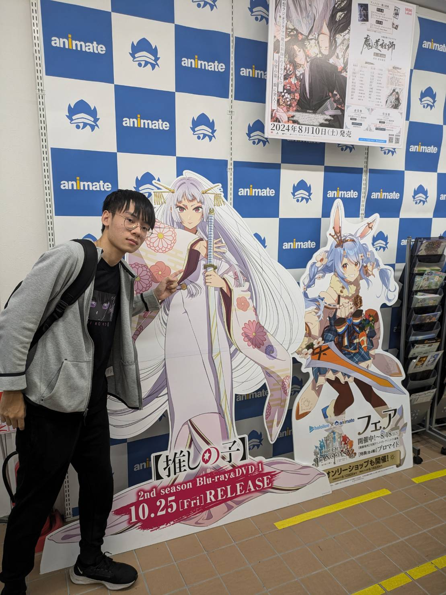

<!DOCTYPE html>
<html lang="en">
<head>
    <meta charset="UTF-8">
    <meta name="viewport" content="width=device-width, initial-scale=1.0">
    <title>自我介紹</title>
<style>
body{
    font-family: Arial,sans-serif;
    margin: 0;
    padding: 20px;
    text-align: center;
}
h1,h2{
    color:#333;
}
p{
    line-height:1.6;
    color:000;
    text-align: left;
    margin: 10px auto;
    width: 80%;
    text-align: center;
}
img{
    max-width: 250px;
    border-radius:10px;
    margin-bottom:20px;
    text-align: center;
}
</style>
</head>
<body>

</body>
<h1>你好，我叫余旻恩</h1>

<h2>簡單介紹</h2>
<p>目前就讀於國立屏東科技大學。</p>
<p>興趣是看動畫、聽音樂、看小說。</p>
<p>
    出生地:台南<br>
    最喜歡國家是日本，當地的文化和我的興趣很相符。<br>
    未來有機會想學日文，學習這門語言相信會讓我的興趣豐富。
</p>
</body>
</html>